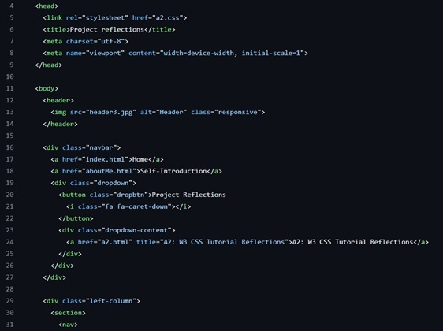
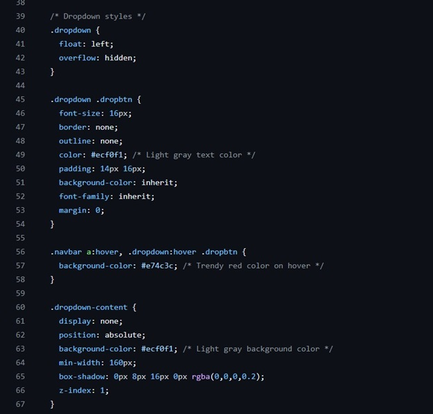

A2: W3 CSS Tutorial Reflections
Week 1, the first task to learning portfolio reflections.
Working with website creation is a subject I have previously explored couple of times during my studies at Haaga-Helia University of Applied Science. HTML and CSS basics became familiar to me during our first-year classes, especially during the Introduction to Digital Services course held by Kasper Valtakari. During the course, our goal was to build responsive website for a cause of our choosing, completed with visuals, flexboxes, appropriate colour schemes all verified with W3C HTML and CSS validation. The webpage had to meet minimal needs of 4 pages in addition to landing page, gallery, on page images, links, texts with varying fonts and sizes. Everything had to be tied into a visual package fit for a real customer.
I chose to create a mock-up website for my small business, 3Fins Diving. Preparation and execution of the project took approximately 7 weeks, and the finished product can view HERE. During the course I was able to create a solid webpage base template for myself to use in future projects. I coded a basic layout for introduction course, and I have since modified it after each project. It is a base of HTML and CSS that can be easily customized for any project. The same base I used as a root code for this learning portfolio. Here is a part of HTML code created for this website that you are currently viewing:
Most of the basic structures of HTML and CSS was familiar to me, and the reason why, I decided to record my learning portfolio with GitHub instead of other more fluid platforms. I knew we would most likely end up with a different platform with our team regarding Team Web Portfolio for this project, so I wanted to challenge myself and refresh my memory on HTML and CSS coding. Below we can view a snippet of this webpages CSS code, more specifically the part that modifies dropdown menu's styles. Colour references were modified from last project and dropdown menu added instead of horizontal menu to serve the usability of this website better.
In the tutorial video, which can be viewed behind this LINK, were a lot of good pointers to more efficient website building. During Introduction to Digital Services course one of our main resources was W3 Schools too. Using W3 library for building has become a habit and was reinforced during all digital service courses. When building, I use W3 library often to shop for features or refresh memory. The tutorial also made me rethink my way of coding, especially HTML.
Even though main functions in HTML and CSS coding were familiar to me a mor efficient way of coding as seen on the video was not. As someone starting in website building my code can end up being unnecessarily long and hinder readability. In the tutorial Brad used a lot of classes in HTML coding to combine styling in both HTML and CSS code. He used a lot of fast optioned styling commands like “red”, “button” or “right” and “left”. I have before strictly kept all styling in CSS, separate from any of my HTML files. Brad almost appeared to use CSS as a fine-tuning tool to correct the styling he didn't quite achieve in HTML code. An approach I will try in my next projects. I am going to see if I could refine my already existing code from this website to be more efficiently built through class building in HTML.